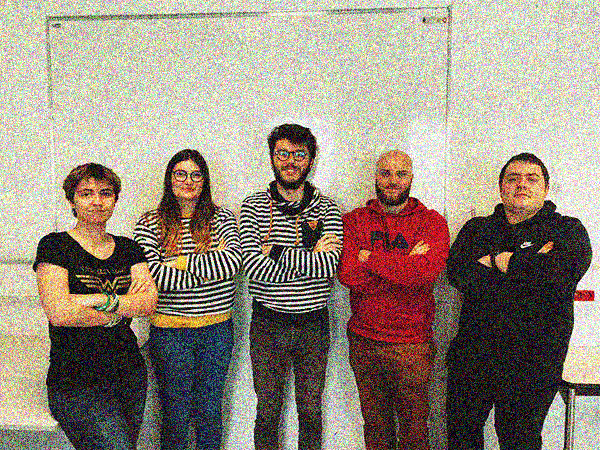

Nous sommes une jeune équipe passionnée de jeux vidéos ! Nous vous proposons une liste (non-exhaustive) des jeux vidéos des 10 dernières années (1980-1989), accompagnée d’un commentaire de présentation et d’une note. Egalement, nous proposons des articles sur l’univers vidéo ludique, que ce soit l’actualité ou d’autres informations.
Nicolas Delimel, Kilian Fichou, Lucas Gérardin, Noémie Marphay, Morgane Roland.